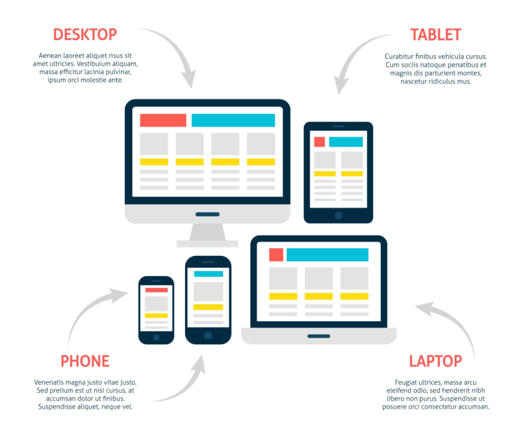

반응형 웹 (Responsive Web)
반응형 웹은 하나의 웹사이트가 다양한 화면 크기에 맞춰 자동으로 레이아웃이 변하는 웹 디자인 방식입니다.

현재 웹 트래픽의 절반 이상이 모바일에서 발생합니다. 작은 화면부터 설계하는 방식이 표준입니다.
모바일·PC 버전을 따로 관리할 필요 없이 하나의 코드베이스로 모든 기기를 대응합니다.
반응형 웹의 3가지 핵심 요소
뷰포트 메타 태그 — 브라우저에게 화면 크기를 알려줍니다.
유동적 단위 — px 대신 %, vw, rem 등 상대 단위를 사용합니다.
미디어 쿼리 — 화면 크기 조건에 따라 다른 CSS를 적용합니다.
a. 뷰포트 메타 태그
모바일 브라우저에게 화면을 어떻게 렌더링할지 알려줍니다.
<head> <meta name="viewport" content="width=device-width, initial-scale=1.0"> </head>
| 속성 | 의미 |
|---|---|
| width=device-width | 뷰포트 너비를 기기 화면 너비에 맞춤 |
| initial-scale=1.0 | 초기 확대/축소 비율 100% |
b. 유동적 단위 (Fluid Units)
고정 단위(px) 대신 상대적 단위를 사용합니다.
| 단위 | 기준 | 용도 |
|---|---|---|
| % | 부모 요소 | 너비, 높이 |
| vw | 뷰포트 너비의 1% | 전체 화면 기준 너비 |
| vh | 뷰포트 높이의 1% | 전체 화면 기준 높이 |
| em | 부모의 font-size | 여백, 크기 |
| rem | html의 font-size (기본 16px) | 폰트, 여백 (가장 권장) |
고정 단위와 유동적 단위를 실제 코드로 비교하면 다음과 같습니다.
.box { width: 960px; /* 화면이 작으면 잘림 */ font-size: 16px; /* 기기마다 다르게 보임 */ }
.box { width: 90%; /* 부모의 90% */ max-width: 960px; /* 최대 960px까지만 */ font-size: 1rem; /* html 기준 1배(16px) */ }
핵심 문법: 미디어 쿼리 (Media Query)
특정 조건에서 다른 CSS를 적용합니다. 반응형 웹의 핵심입니다.
기본 문법
@media screen and (조건) { /* 조건이 맞을 때 적용할 스타일 */ 선택자 { 속성: 값; } }
조건 종류
| 조건 | 설명 |
|---|---|
| max-width: 768px | 너비가 768px 이하일 때 |
| min-width: 768px | 너비가 768px 이상일 때 |
| orientation: portrait | 세로 모드 |
| orientation: landscape | 가로 모드 |
※ 예시
기본 스타일을 먼저 작성하고, 미디어 쿼리 안에서 조건에 맞을 때만 덮어쓰는 방식입니다.
/* 기본 스타일 */ .container { background-color: blue; } /* 화면 너비가 768px 이하일 때 */ @media (max-width: 768px) { .container { background-color: red; } }
자주 사용하는 브레이크포인트
- 모바일 : ~767px
- 태블릿 : 768~1023px
- 데스크탑 : 1024px~
스마트폰. 단일 열 레이아웃, 큰 터치 영역이 필요합니다.
태블릿. 2열 레이아웃을 사용하는 경우가 많습니다.
데스크탑. 다단 레이아웃과 넓은 콘텐츠 영역을 활용합니다.
/* Mobile First — 기본이 모바일 스타일 */ .container { width: 100%; } /* Tablet: 768px 이상 */ @media (min-width: 768px) { .container { width: 90%; } } /* Desktop: 1024px 이상 */ @media (min-width: 1024px) { .container { max-width: 1200px; margin: 0 auto; } }
| 구분 | 범위 | 미디어 쿼리 조건 |
|---|---|---|
| 모바일 | ~ 767px | 기본 스타일 (조건 없음) |
| 태블릿 | 768 ~ 1023px | @media (min-width: 768px) |
| 데스크탑 | 1024px ~ | @media (min-width: 1024px) |